Total Guide to CNC Milling Cutters, Part 2
Chamfer, Corner Rounding, V-Bits, and Other Special Tools
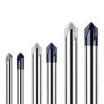
Chamfer Tools
Chamfer Tools are used to put a chamfer (bevelled edge) on the edges of a part. Chamfers are one of the things that make CNC'd parts look so professionally made. You can chamfer an edge with a purpose-made chamfer tool, or in a pinch if you don't have one or are trying to save a toolchanger slot you can use a spot drill for chamfering. There are even indexable chamfer, engraving, and spotting combination tools that are pretty slick:
Indexable combination spot drill, chamfering, and engraving tool...
Corner Rounding tools are used to apply a radius instead of a chamfer to the edge:
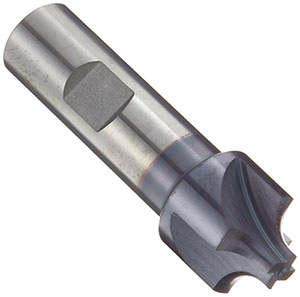
A corner rounding tool...
Chamfering is often preferred because it's harder to get a good finish without chatter marks with most corner rounding and gets worse the larger the radius. Chamfering cleans up the edge quickly without those complications.
V-Bits are commonly used for engraving:
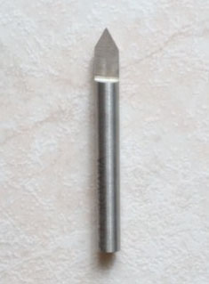
A V-Bit...
The simple geometry on the cutters prevents them from being useful for a lot else, but they will do a nice job engraving nice clear letters and figures. G-Wizard Calculator has special provision for working with V-Bits.
There are many other special cutters for special shapes--dovetails and T-Slot cutters come to mind.
Reamers
Reamers offer a quick and efficient way to clean up the sides of a hole, make sure it is round, and get it to a particular diameter with fairly high accuracy:
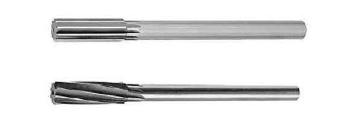
They require a hole be drilled first that is fairly close to the final size so that the reamer actually removes relatively little material. G-Wizard Calculator will tell you what hole size is needed for a given reamer size in the tips section as well as calculating feeds and speeds for the reamer.
If a twist drill or interpolated hole with an endmill doesn't produce an accurate enough hole in terms of diameter and roundness or a hole with good enough surface finish, the primary alternatives are Reamers and Boring. For holes too small for a boring head, a Reamer can be the only choice.
Reamer Tips
- Use a reamer with helical flutes if the hole has a keyway or similar feature. The helical flute will bridge the keyway instead of getting caught in it.
- Reamers have a long shank so they'll "float," which basically means so they can deflect and seek the center of the hole being reamed.
- A Reamer with helical flutes may leave a better surface finish by evacuating chips better than a straight flute reamer. Recutting chips is a common cause of wall finish issues.
- Use a collet chuck or other toolholder with low runout for a reamer.
- CNC'ers use a G85 rather than a drilling cycle for reamers. The drilling cycles rapid out of the hole which can mar the surface finish.
Tapping
Mills thread holes either using taps or by thread milling. There are advantages and disadvantages to each, but all things considered, tapping is usually faster and cheaper.
Tap Types
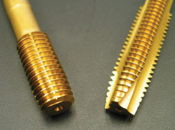
Roll Form (left) versus Cutting (right) Taps...
The two major categories of taps are Roll Form and Cutting Taps. Roll Form taps don't make any chips, which is very advantageous. Essentially, they forge the threads by cold forming the material, so they create stronger threads too. In addition, Roll Form Taps are stronger than Cut Taps, so they're less likely to break and they give longer tap life. Most of the time Roll Form taps are preferred over Cut Taps when they can be used, but they're not for every material. If the material produces a continuous chip when drilling, it's a good candidate for a Form Tap. Hardness is another criteria. W hile many machinists may think form taps are only for aluminum, the truth is you can form tap materials up until they have a hardness greater than 36 HRC, which is about 340 BHN. That actually covers a surprisingly wide range of materials including a lot of steels. That information comes from tapmaker Titex via the link I’ve provided.
There are also plug taps and bottoming taps. The latter have flat bottoms for tapping blind holes. Beware, blind holes are notorious hazards for breaking taps. A Roll Form Tap has the advantage in a blind hole because it makes no chips. If you can provide some extra depth in the blind hole beyond where the threads go, that'll give the chips a place to go with a Cut Tap.
You can also get different geometries on Cut Taps, such as a Spiral Flute tap that will do a much better job pulling the chips up out of the hole.
Rigid Tapping, Tapping Heads, and Tension / Compression Holders
Having selected the Tap you want to use, you're still not done. You need to arrange toolholding appropriate to your machine's capabilities. Taps have to be driven in such a way that the feedrate downward is properly synchronized to the spindle rpm based on the threads that are being cut. Too much or too little puts pressure on the tap and the threads and will create a problem. The approaches to this depend on whether you machine can precisely synchronize the feedrate to the spindle rpm, which is called Rigid Tapping. If so, the Tap can be held in a rigid toolholder and higher rpms can be used. If not, you need a toolholder that has some play in it so that the tap can be drawn into the hole at its own rate as it cuts the thread. The play along the spinning axis prevents inordinate pressure from building so long as the feedrate is close.
Blind Holes can be really tough to get right without Rigid Tapping as the spindle will often spin a bit after it is commanded to stop and it's hard to get it to spin just the right number of times for a perfect blind hole. A toolholder with the play described can help provided you don't run out of play.
The two styles of toolholder used when Rigid Tapping is unavailable are called Tapping Heads and Tension/Compression Holders.
Here is a typical Tapping Head:
Tapping Head from Tapmatic...
Tapping Heads incorporate friction slip clutches, axial free play, and a reversing feature that automatically reverses the spin direction when the feed direction reverses. They were originally created to make tapping easy for drill presses and manual milling machines. They can be used on CNC machines, but they're not nearly as common as Rigid Tapping or Tension/Compression Holders.
Here is a typical Tension/Compression Holder:
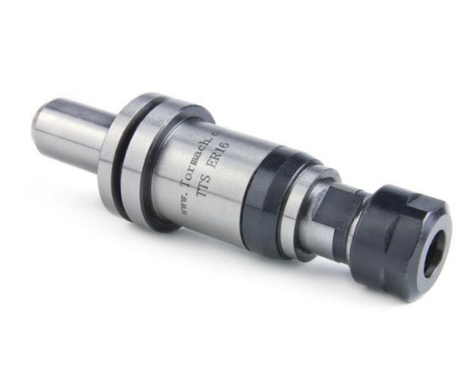
A typical Tension-Compression Tap Holder, this one by Tormach...
These holders are spring-loaded along the axis and allow the tap to seek its own position as it is cutting threads.
Tapping Tips
- Our #1 Best Tip to Avoid Broken Taps: Drill the right sized hole to avoid excessive torque on the tap. And please note--the hole size is not the one listed on most drill tap charts or on the tap itself. You need our special Drill Tap Size Chart and Calculator to get the right one.
- Important for Beginners: Avoid Hardware Store Taps and Dies! The ones made for machining don't cost much more and they sure do work a lot better.
- Use a Form Tap where possible--the tap is stronger (so less likely to break) and the threads are stronger too. Plus, they make no chips, so there is no possibility of chip bind up in a blind hole. Their only disadvantage is they're limited in the hardness of the material they can be used on.
- Consider using a good Tapping Lubricant if your machine's coolant isn't good enough for tapping. You can even put a cup on the machine table and program the CNC in g-code to dip the tap in it before starting to tap. It beats the heck out of hanging in the enclosure door with a brush.
- Consider "peck tapping" difficult holes. For the most part, you will need rigid tapping to be able to peck tap because the tap has to get itself synchronized back to the same set of threads as it goes in and out of the hole. Peck tapping is only called for with a cutting tap–no benefit to pecking with a form tap. Peck tapping is also an excellent way of clearing the long stringy chips often found when machining plastics and some other materials .
- For the hardest materials, and especially when the cost of a broken tap is very very high, consider thread milling. You’re much less likely to break a thread mill, and if you do, it won’t be stuck in the hole the way a tap would be.
- Check out our Advantages and Pitfalls of Rigid Tapping for Rigid Tapping tips.
Thread Mills
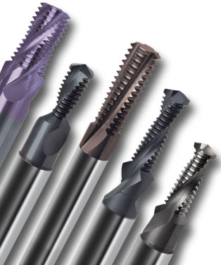
Guhring Thread Mills...
We mentioned above that for the hardest materials, and especially when the cost of a broken tap is very very high, consider thread milling. You’re much less likely to break a thread mill, and if you do, it won’t be stuck in the hole the way a tap would be.
That's an excellent reason to Thread Mill instead of Tapping. A threadmill is a rotary cutter that has the form of a thread that is moved with a helical motion to create either an external or internal thread. They look a lot like taps, but are used entirely differently. For one thing, they're smaller than the hole diameter so that there's room to move them in a helix and get them back out without touching the just-cut threads.
There are indexable single-point Thread Mills as well for larger threads:
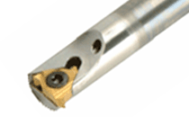
Indexable Single-Point Thread Mill...
Boring
Boring is a method of making a hole of a precise diameter, roundness and high quality surface finish. It's an alternative to reaming, especially for larger holes that would be prohibitive to ream. Boring is a precise analog to Turning on a lathe, except that the cutting tool spins instead of the workpiece. It is typically used for ID bores, but there are tools and setups available that can be used to make an OD boss of a precise nature too.
There are many different styles of Boring Head available. Here is a selection of Criterion Boring Heads:

Selection of Criterion Boring Heads...
Typically, you'd drill or interpolate the initial hole and then use a Boring Head for a finish pass that actually removes minimal material, but assures the precision and surface finish of the bore. If this can all be done in one pass, so much the better. If it requires multiple passes, things are going to be slower and more cumbersome. The most common boring heads have to be set for one diameter and then locked down. You could use an additional head for each pass, but that's going to get crazy pretty fast. Another solution is what's called an "Automatic Boring and Facing Head:"
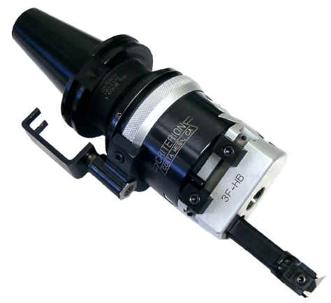
An Automatic Boring and Facing Head...
These mechanical marvels expand the diameter through mechanical linkage so they can do multiple passes automatically.
Unless your application requires really tight tolerances, perhaps to fit bearings, you're unlikely to need to resort to boring. Instead, you'll probably interpolate the hole with an endmill. It's important to understand what the limitations of your machine are with interpolation. G-Wizard Calculator can help you to Interpolate more accurately with its Interpolation Mini-Calc.
Saws and Woodruff Cutters
Saws
Saws can be extremely useful when milling. For example, they can be used to create deep but narrow slots or to slice apart individual parts from a single piece of work stock. Saws for milling use are typically called "Slitting Saws" and are installed on an arbor like this:
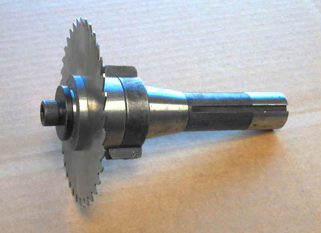
Slitting Saw on an arbor/toolholder...
It's important to choose a slitting saw with the correct number of teeth for your application and it's also important to get the correct feeds and speeds as slitting saws are fairly delicate. G-Wizard Calculator can recommend both the number of teeth and feeds and speeds for slitting saws.
Woodruff Cutters
Woodruff Cutters, also called Keyseat and T-Slot Cutters, are most commonly used to cut a small slot in a shaft to hold a Woodruff Key. These are small semi-circular keys whose advantage is they can be made a little distance from the end of the shaft without intruding on shaft shoulders. This reduces stresses on the shaft which is often a highly stressed part. Very similar or identical geometries are used to cut T-Slots as well. Woodruff cutters are listed with saws because Woodruff Feeds and Speeds are calculated identically to saw feeds and speeds.
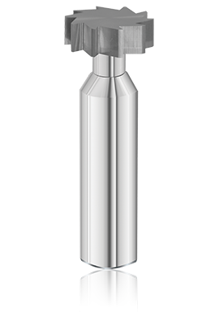
Woodfuff Cutter...
Broaches
Broaching is the operation of shaving a slot into something, typically with a vertical motion. Many don't know it but a broach can be fitted into a special toolholder and the CNC's ability to move the spindle up and down results in a broaching operation that can often save a lot of time and money. For more on broaching in a CNC mill or lathe, see our blog post on the topic.